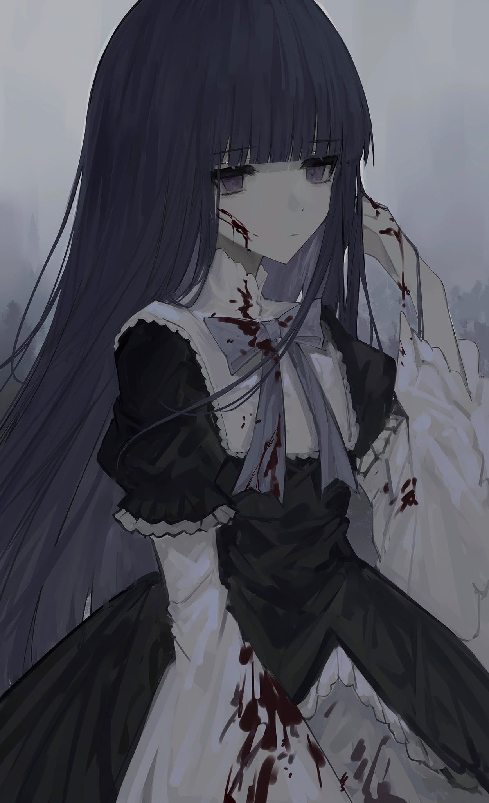
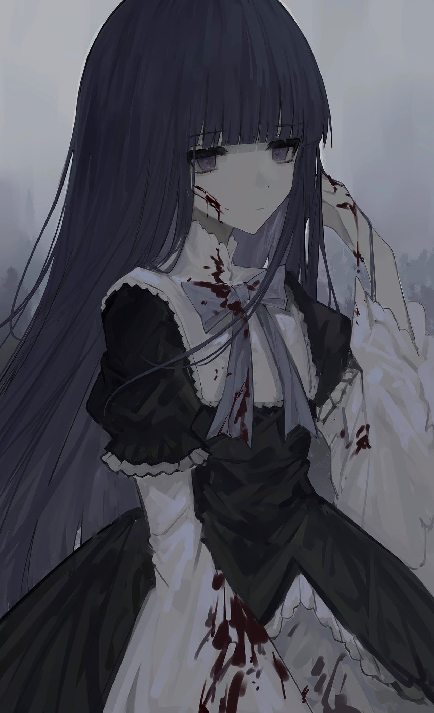

Bernkastel Appreciation Site.
21 August, 2023
I had fun while making this! She is one of my favorite characters from the When They Cry series!
Dedicated for my stupid gf
I definitely need to continue this later
I know its shit because im bad at designing, pure html and css of course
About
Frederica Bernkastel
Bernkastel has long, steel-blue hair and emotionless purple eyes. Her primary clothing consists of a black and white Gothic Lolita dress with a blue ribbon, white cloth socks and black Mary Jane shoes. She seems to have a black cat tail with a blue ribbon tied on it.
Bernkastel initially appears emotionless and gets bored easily. She has forgotten the concept of pain and fear after centuries of being superior to others. Deep down, Bern is sadistic and willing to kill or sacrifice anything or anyone for her own amusement. She has a tendency to hold grudges and that even a century won't make her forget the humiliation she suffered.
Bern can use "magic of miracles" to reset a bad situation, as long as the chance of it becoming favourable is not zero. She possesses the ability to transform into a cat and to evoke an apparently infinite number of cat furniture. She can also manipulate Fragments as weapons and transform them into defensive tools.
Erika Furudo
Erika has dark blue eyes and hair. Her long hair is in pigtails. She wears a fancy pink dress with frills and a white and pink canotier with red roses on it.
Initially, Erika comes off as a sweet, polite, and soft-spoken young lady who is immediately loved and trusted by most of the Ushiromiya family soon after washing up on Rokkenjima. But this is merely a facade, as Erika is truly an arrogant, sadistic, ruthless and cruel woman who cares little for anyone but herself and her master Bernkastel. She's highly intelligent and doesn't hesitate to use it to lord herself over others.
Erika has a photographic memory and practically unlimited stamina. She has incredibly heightened senses and is on-par with a tape recorder. In End, she uses these powers to climb all over the guesthouse in the rain to stick tape on the windows and listens in to Battler's room all night. Erika is also able to call people to attention and force them to listen to her as an extension of her powers.
Images Dump
 
